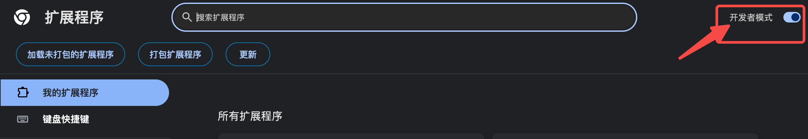
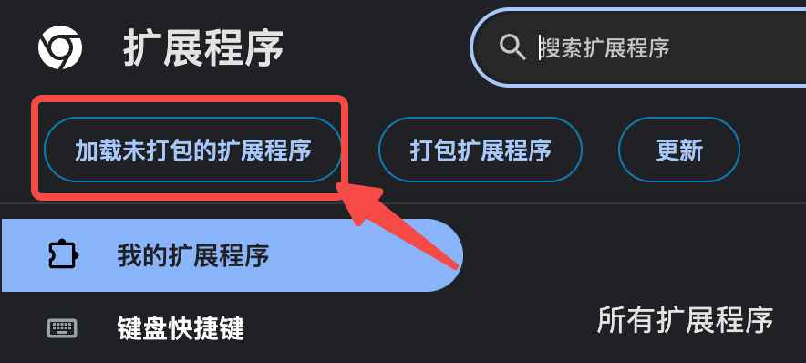

扩展会做
扫描当前页面、预览匹配结果、填写绿色普通字段，并把资料保存在本机浏览器。
招聘表单助手
不需要安装开发工具。准备一份 PDF 或 Word 简历，跟着下面的图片操作即可。
先看这里
下载项目并加载 browser-extension 文件夹。
让可信 AI 从 PDF/Word 生成 profile.json。
在招聘页面先确认绿色、黄色和缺值项。
只填写绿色字段，检查后由你手动提交。
安装扩展


准备 profile.json
导入资料
扫描与填写
安全边界
扫描当前页面、预览匹配结果、填写绿色普通字段，并把资料保存在本机浏览器。
不会提交、保存、删除、发送验证码、勾选协议、上传附件或绕过 CAPTCHA。
常见问题
先导入填写好的 profile.json。“填写绿色字段”要在完成一次扫描后才会启用。
很多招聘网站使用自定义组件，看似写入并不代表真正选中，因此扩展把它们保留为黄色人工项。
先在网页上手动创建足够数量的经历卡片，再确认 profile.json 中的数组顺序与简历一致。
进入扩展程序页面点击“重新加载”，然后刷新已经打开的招聘页面。